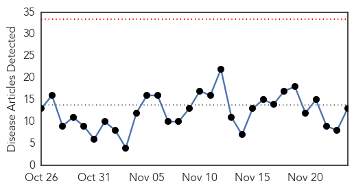

Dengue Fever
30-Day Web Trend
0 alerts, 0 warnings

30-Day Twitter Trend
3 alerts, 0 warnings

Article Locations

Article Confidences

Top Articles:
- 0.995
- Prawet district has highest number of dengue cases
- 0.994
- Potentially Deadly Virus Hits Hawaii— Everything You Need to Know
- 0.994
- 101 cases of dengue fever confirmed on Hawaii Island
- 0.978
- Takeda's Tools for Fighting Infectious Diseases
- 0.976
- Department of Health spraying areas with high mosquito presence
- 0.975
- Govt deptts working vigorously to control dengue
- 0.971
- Dengue in Hawaii: 92 cases; ‘This isn’t a huge outbreak compared to elsewhere’: CDC
- 0.970
- Confirmed dengue fever fatalities rise to 174: CDC
- 0.959
- Upstate Medical University, U.S. Army to partner on grant up to $12M to develop dengue virus vaccine
- 0.958
- Dengue cases nearing 100
- 0.889
- Residents urged to consult experts on use of pesticides Hawaii News, Honolulu, Honolulu News, Sports, Editorial, Features, Travel and Business
- 0.884
- Upstate Medical receives $12 million from Army to research dengue vaccine
- 0.859
- Zika virus threatens Caribbean tourism
Top Tweets:
- 0.825
- Flavivirus news: Dengue cases nearing 100 - West Hawaii Today: West Hawaii TodayDengue cases ne... https://t.co/VHSfcNKzE4 pathogenposse
- 0.610
- Flavivirus news: Prawet district has highest number of dengue cases - The Nation: Prawet distri... https://t.co/3wFUU0jOy0 pathogenposse
- 0.561
- Flavivirus news: Dengue Fever Community Meetings Scheduled - Big Island Now: Dengue Fever Commu... https://t.co/5MNP1ylffM pathogenposse
- 0.551
- Flavivirus news: Dengue fever to continue as threat - Viet Nam News: Dengue fever to continue a... https://t.co/FpLCTwQQ75 pathogenposse
Ebola
30-Day Web Trend
0 alerts, 0 warnings

30-Day Twitter Trend
7 alerts, 17 warnings

Article Locations

Article Confidences

Top Articles:
- 1.000
- Liberia Has First Ebola Fatality in Months as Outbreak Crops Back Up
- 1.000
- Boy dies of Ebola in Liberia, first fatality in months
- 1.000
- Deadly Ebola virus has returned to Liberia and nobody understands why
- 1.000
- Ebola reappears in Liberia, leaving the question: Why?
- 1.000
- Liberia under watch as Ebola makes third appearance
- 1.000
- Boy dies of Ebola in Liberia, first fatality in months
- 1.000
- Liberia Confirms 15-year-old Boy Died from Ebola, First Death in Months : News : News Every Day
- 1.000
- Boy Dies Of Ebola In Liberia, First Fatality In Months
- 1.000
- Ebola – The Wind That Blows; Will It Stop?
- 1.000
- Liberia records 1st Ebola death since July - KSBY.com
- 1.000
- Puzzling Ebola Death Shows How Little We Know About The Virus
- 1.000
- Boy dies of Ebola in Liberia, first fatality in months
- 1.000
- Ebola Kills First Victim in Re-emergence
- 1.000
- Teenage boy dies of Ebola in Liberia
- 1.000
- Ebola is Back in Liberia: Why Are We Struggling to Eradicate It?
- 1.000
- Ebola Re-Emerge in Liberia; CDC Investigates Return of Disease
- 1.000
- Sahara Reporters
- 1.000
- Boy Dies Of Ebola In Liberia
- 1.000
- Liberia Records 1st Ebola Death Since July
- 0.999
- Liberia records first Ebola death since July
- 0.999
- First Ebola Death Recorded In Liberia Since June
- 0.999
- Why Experts Blame WHO For The 'Needless' Deaths Caused By Ebola Virus In West Africa
- 0.999
- Boy (15) is first Ebola fatality in Liberia since July
- 0.999
- Liberia Records Another Ebola Case As 15 Year-Old-Boy Dies From The Virus
- 0.999
- Teenager dies as Ebola returns to Liberia: official
- 0.999
- Amid Failure and Chaos, an Ebola Vaccine
- 0.999
- Ebola crisis: World Health Organization response criticised in damning report
- 0.999
- Liberia Sees First Ebola Death Since July -- NYMag
- 0.998
- Ebola crisis: Liberia boy dies after fresh cases
- 0.997
- In the World
- 0.997
- Liberia monitors over 150 Ebola contacts
- 0.997
- Liberia records first Ebola death since July
- 0.997
- Ebola Kills 15-Year-Old Boy in Liberia
- 0.994
- An indictment of Ebola response
- 0.992
- Liberia just had its first Ebola death since July
- 0.980
- Health Highlights: Nov. 24, 2015
- 0.973
- Sierra Leone Embassy in Germany Observes prayers for Ebola Victims
- 0.966
- LIBERIA: Health Ministry Identifies 139 Contacts In Latest Ebola Case
- 0.964
- House of Chiefs strategizes for prevention of Ebola
- 0.964
- Ebola Kills 15-Year-Old Boy in Liberia
- 0.960
- Sierra Leone: Post-Ebola assistance to the vulnerable underway
- 0.955
- WHO Director-General addresses Regional Committee for Africa
- 0.940
- Ebola will always return unless we develop the tools to end it
- 0.917
- Boy dies of Ebola in Liberia, first such fatality in months
- 0.896
- Boy dies of Ebola in Liberia in first such fatality in months
- 0.893
- Theft of protective health suits from Paris hospital raises possibility terror groups could launch chemical, bacteriological warfare
- 0.872
- 'This virus is tearing people apart': Dallas Ebola victim's relatives shunned as ...
- 0.866
- News in Brief 24 November 2015 (AM)
- 0.802
- Vintage photos show the terrifying first expeditions into the Congo to track down Ebola
- 0.780
- Samuel Boland, who worked on Ebola front lines, wins Marshall Scholarship
Showing top 50 articles...
Top Tweets:
- 0.998
- US hospitals are giving people FREE Ebola virus vaccines too free ebola
- 0.996
- FREE Ebola Virus Vaccines US hospitals give people FREE Ebola details https://t.co/btsQVaaZ4Q Hannity
- 0.992
- Ebola: campagne contre l'essai vaccinal au Cameroun - https://t.co/TzvUIbtBs3 ebola
- 0.991
- Ebola - 153 Contacts Under Surveillance - Three Confirmed Cases - https://t.co/odlAdaqDHB ebola
- 0.990
- Ebola Outbreak Shows 'Major Reforms' Needed - https://t.co/Xt3Q8Bojj3 ebola
- 0.986
- BREAKING EBOLA! 3 People have Ebola hundreds quarantined https://t.co/snnsEct17a
- 0.986
- BREAKING EBOLA! 3 People have Ebola hundreds quarantined https://t.co/snnsEct17a
- 0.986
- BREAKING EBOLA! 3 People have Ebola hundreds quarantined https://t.co/snnsEct17a
- 0.986
- BREAKING EBOLA! 3 People have Ebola hundreds quarantined https://t.co/snnsEct17a
- 0.986
- BREAKING EBOLA! 3 People have Ebola hundreds quarantined https://t.co/snnsEct17a
- 0.986
- BREAKING EBOLA! 3 People have Ebola hundreds quarantined https://t.co/snnsEct17a …
- 0.984
- BREAKING EBOLA! 3 People have Ebola hundreds quarantined https://t.co/snnsEct17a ebola BlackFridayIn3Words https://t.co/0B7dV2LILE
- 0.978
- Breaking! Ebola is Back! - https://t.co/Ckms6Y7TBx ebola
- 0.974
- Puzzling Ebola Death Shows How Little We Know About The Virus - NPR https://t.co/2giUCKeLrQ ebola EVD
- 0.974
- Ebola global response was 'too slow', say health experts - https://t.co/sdcwhj9ARa ebola
- 0.971
- BREAKING EBOLA! 3 People have Ebola hundreds quarantined https://t.co/snnsEct17a refugeeswelcome refugees refugeecrisis NoRefugees
- 0.970
- @BretBaier Ebola 3 people diagnosed with Ebola this week several hundred quarantined https://t.co/eVHW7jqA6E
- 0.969
- Ebola crisis: Liberia boy dies after fresh cases - BBC News https://t.co/GD5VzHyC6V ebola EVD
- 0.966
- House of Chiefs strategizes for prevention of Ebola - GhanaWeb https://t.co/3QHyySu0wS ebola EVD
- 0.965
- Teenage Boy Dies Of Ebola In Liberia After Months Without New Cases - https://t.co/ZsSp9zurkc ebola
- 0.961
- Boy dies of Ebola in Liberia, first fatality in months - Reuters https://t.co/USYpqrQOPN ebola EVD
- 0.960
- Boy dies of Ebola in Liberia, first such fatality in months - Reuters https://t.co/QtKvXGyF3g ebola EVD
- 0.959
- Global health experts accuse WHO of 'egregious failure' on Ebola - https://t.co/63BTpHsLCN ebola
- 0.958
- Ebola reappears in Liberia, leaving the question - https://t.co/qLY1UKrFMy ebola
- 0.958
- Ebola reappears in Liberia, leaving the question - https://t.co/aQYTEBkSJb ebola
- 0.941
- BREAKING EBOLA KILLS teenager TODAY! hundreds quarantined https://t.co/vBbeQKC50z ThanksgivingWithBlackFamilies Ebola
- 0.936
- Boy, 15, dies of Ebola in Liberia - The Advertiser https://t.co/yBVFHoL2cr ebola EVD
- 0.930
- 15-yr-old died of Ebola in Liberia; this is the first virus-related fatality since country was declared Ebola-free https://t.co/h4Oj5SYFUW
- 0.924
- US officials headed to Liberia to seek cause of latest Ebola cases - https://t.co/fuBwK5efKT ebola
- 0.909
- BREAKING EBOLA! 3 People have Ebola hundreds quarantined https://t.co/snnsEct17a KellyFile https://t.co/7qs1rvlCir
- 0.909
- BREAKING EBOLA! 3 People have Ebola hundreds quarantined https://t.co/snnsEct17a … https://t.co/vAO2J2KQXy
- 0.909
- BREAKING EBOLA! 3 People have Ebola hundreds quarantined https://t.co/snnsEct17a … https://t.co/sZVFgeM0Q5
- 0.909
- BREAKING EBOLA! 3 People have Ebola hundreds quarantined https://t.co/snnsEct17a … https://t.co/fJfJuzqDZy
- 0.909
- BREAKING EBOLA! 3 People have Ebola hundreds quarantined https://t.co/snnsEct17a … https://t.co/bw7QudTnzb
- 0.909
- BREAKING EBOLA! 3 People have Ebola hundreds quarantined https://t.co/snnsEct17a … https://t.co/R1EAeLwXkb
- 0.909
- BREAKING EBOLA! 3 People have Ebola hundreds quarantined https://t.co/snnsEct17a … https://t.co/Lzb5adXeNt
- 0.909
- BREAKING EBOLA! 3 People have Ebola hundreds quarantined https://t.co/snnsEct17a … https://t.co/JL6kbIZZvE
- 0.909
- BREAKING EBOLA! 3 People have Ebola hundreds quarantined https://t.co/snnsEct17a … https://t.co/AmJxGLfJwM
- 0.909
- BREAKING EBOLA! 3 People have Ebola hundreds quarantined https://t.co/snnsEct17a https://t.co/htMThpdWJY
- 0.909
- BREAKING EBOLA! 3 People have Ebola hundreds quarantined https://t.co/snnsEct17a https://t.co/ajjcYLFGbK
- 0.909
- BREAKING EBOLA! 3 People have Ebola hundreds quarantined https://t.co/snnsEct17a https://t.co/afQAMG5tP8
- 0.909
- BREAKING EBOLA! 3 People have Ebola hundreds quarantined https://t.co/snnsEct17a https://t.co/RT5gjzzrkB
- 0.909
- BREAKING EBOLA! 3 People have Ebola hundreds quarantined https://t.co/snnsEct17a https://t.co/NpstfHEOGt
- 0.909
- BREAKING EBOLA! 3 People have Ebola hundreds quarantined https://t.co/snnsEct17a https://t.co/NStzYWpHd8
- 0.909
- BREAKING EBOLA! 3 People have Ebola hundreds quarantined https://t.co/snnsEct17a https://t.co/KNVE7U8t4p
- 0.909
- BREAKING EBOLA! 3 People have Ebola hundreds quarantined https://t.co/snnsEct17a https://t.co/JfuSRKM9MX
- 0.909
- BREAKING EBOLA! 3 People have Ebola hundreds quarantined https://t.co/snnsEct17a https://t.co/IRMElzac78
- 0.909
- BREAKING EBOLA! 3 People have Ebola hundreds quarantined https://t.co/snnsEct17a … https://t.co/hr1bTfotL3
- 0.909
- @DonnySmith557 BREAKING EBOLA! 3 People have Ebola hundreds quarantined https://t.co/snnsEct17a https://t.co/l6P4itr044
- 0.909
- @CallyGingrich BREAKING EBOLA! 3 People have Ebola hundreds quarantined https://t.co/snnsEct17a https://t.co/2hQwOYRoXY
Showing top 50 tweets...